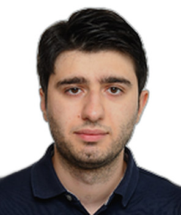

Profile
Toghrul Karimov is a postdoctoral researcher at the Max Planck Institute for Software Systems in Saarbrücken, where he has worked since February 2024. He was a PhD student there from 2019 to 2024, supervised by Joël Ouaknine. The thesis, Algorithmic verification of linear dynamical systems, was submitted at Saarland University in 2024 and received the grade summa cum laude. He holds an MCompSci in computer science from the University of Oxford (2015–2019), with first-class honors. His papers concern decidability and verification of linear dynamical systems.
Work experience
Max Planck Institute for Software Systems, Saarbrücken, Germany
February 2024–presentPostdoctoral Researcher
Education
PhD
2019–2024Algorithmic verification of linear dynamical systems. Supervisor: Joël Ouaknine. Grade: summa cum laude. Saarland University, 2024
Max Planck Institute for Software Systems, Saarbrücken, Germany; degree at Saarland University
MCompSci
2015–2019Computer science. First-class honors
University of Oxford, Oxford, United Kingdom
Grants & projects
- CPEC mini-project, travel to Oxford to work with Amaury Pouly on reachability for linear time-invariant systems — DFG grant 389792660, TRR 248
Teaching
- Winter 2022 — Topics in algorithmic dynamical systems theory — Teaching assistant — Saarland University
- Summer 2020 — Automata and sequences — Teaching assistant — Saarland University
Publications
Book chapters
1. Aghamov, R.; Baier, C.; Karimov, T.; Nieuwveld, J.; Ouaknine, J.; Vahanwala, M. Model checking Markov chains as distribution transformers. In: Principles of Verification: Cycling the Probabilistic Landscape. Lecture Notes in Computer Science, 15261, 2024.
2. Karimov, T.; Kelmendi, E.; Ouaknine, J.; Worrell, J. What’s decidable about discrete linear dynamical systems? In: Principles of System Design: Thomas A. Henzinger Festschrift. Lecture Notes in Computer Science, 13660, 2022.
Peer-reviewed journal articles
1. Berthé, V.; Karimov, T.; Nieuwveld, J.; Ouaknine, J.; Vahanwala, M.; Worrell, J. The monadic theory of toric words. Theoretical Computer Science, 1025.
Conference papers and abstracts
1. Karimov, T.; Luca, F.; Nieuwveld, J.; Ouaknine, J.; Worrell, J. On the decidability of Presburger arithmetic expanded with powers. SODA 2025, to appear.
2. Berthé, V.; Karimov, T.; Nieuwveld, J.; Ouaknine, J.; Vahanwala, M.; Worrell, J. On the decidability of monadic second-order logic with arithmetic predicates. Proceedings of LICS 2024. Distinguished Paper Award.
3. Aghamov, R.; Baier, C.; Karimov, T.; Piribauer, J.; Ouaknine, J. Linear dynamical systems with continuous weight functions. Proceedings of HSCC 2024. ACM SIGBED Best Paper Award.
4. Karimov, T.; Kelmendi, E.; Nieuwveld, J.; Ouaknine, J.; Worrell, J. The power of positivity. Proceedings of LICS 2023.
5. Baier, C.; Funke, F.; Jantsch, S.; Karimov, T.; Lefaucheux, E.; Ouaknine, J.; Purser, D.; Whiteland, M.; Worrell, J. Parameter synthesis for parametric probabilistic dynamical systems and prefix-independent specifications. Proceedings of CONCUR 2022.
6. D’Costa, J.; Karimov, T.; Majumdar, R.; Ouaknine, J.; Salamati, M.; Worrell, J. The pseudo-reachability problem for diagonalisable linear dynamical systems. Proceedings of MFCS 2022.
7. Karimov, T.; Lefaucheux, E.; Ouaknine, J.; Purser, D.; Worrell, J.; Whiteland, M. What’s decidable about linear loops? Proceedings of the ACM on Programming Languages, 6, POPL 2022.
8. Baier, C.; Funke, F.; Jantsch, S.; Karimov, T.; Lefaucheux, E.; Luca, F.; Ouaknine, J.; Purser, D.; Whiteland, M.; Worrell, J. The orbit problem for parametric linear dynamical systems. Proceedings of CONCUR 2021.
9. D’Costa, J.; Karimov, T.; Majumdar, R.; Ouaknine, J.; Salamati, M.; Soudjani, S.; Worrell, J. The pseudo-Skolem problem is decidable. Proceedings of MFCS 2021.
10. Almagor, S.; Karimov, T.; Kelmendi, E.; Ouaknine, J.; Worrell, J. Deciding ω-regular properties on linear recurrence sequences. Proceedings of the ACM on Programming Languages, 5, POPL 2021.
11. Baier, C.; Funke, F.; Jantsch, S.; Karimov, T.; Lefaucheux, E.; Ouaknine, J.; Pouly, A.; Purser, D.; Whiteland, M. Reachability in dynamical systems with rounding. Proceedings of FSTTCS 2020.
12. Karimov, T.; Ouaknine, J.; Worrell, J. On LTL model-checking for low-dimensional discrete linear dynamical systems. Proceedings of MFCS 2020.
Invited talks and conference participation
- 2024 — Symbolic dynamics and arithmetic expansions workshop, Roscoff, France; logic seminar, Stellenbosch University, South Africa — Talk — Ode to o-minimality
- 2023 — LICS 2023 — Talk — The power of positivity
- 2023 — Bellairs workshop, Barbados — Talk — The model-checking problem for linear dynamical systems
- 2022 — MFCS 2022 and RP 2022 — Talk — The pseudo-reachability problem for diagonalisable affine dynamical systems
- 2021 — MFCS 2021 — Talk — The pseudo-Skolem problem is decidable
- 2021 — Monsoon Math 2021 — Talk — Invariants and impossibility: from geometric constructions to solving polynomial equations
- 2021 — POPL 2021 — Talk — Deciding ω-regular properties on linear recurrence sequences
- 2020 — MPI-SWS — Lightning talk — On verification of linear dynamical systems
- 2020 — MFCS 2020 — Talk — On LTL model-checking for low-dimensional discrete linear dynamical systems